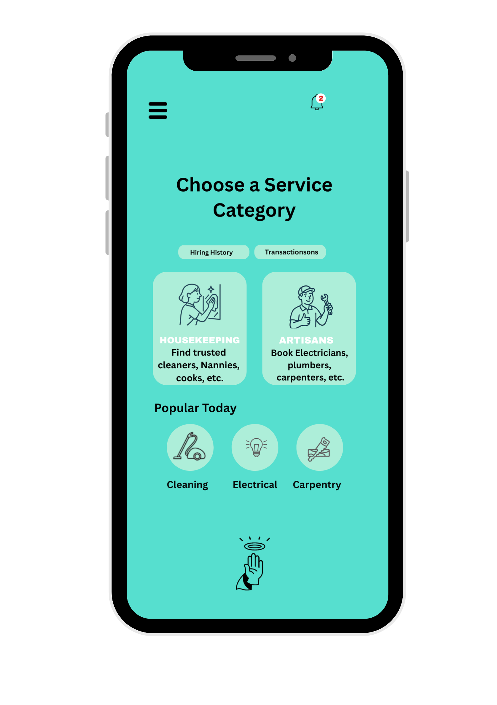
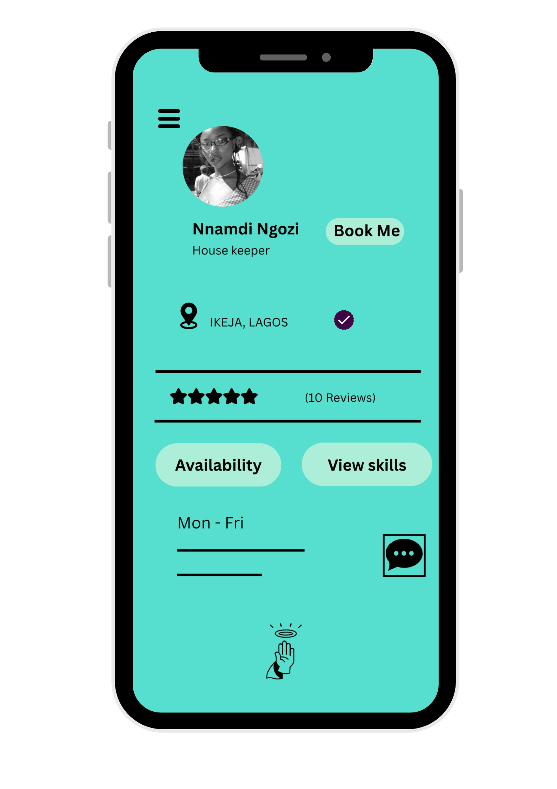

Product Manager & Designer | Abeokuta, Nigeria
Email: bellotoyosi68@mail.com | Phone: +234 9022481002
I’m a passionate Product Manager and Designer based in Nigeria, dedicated to creating user-centered digital solutions that solve real-world problems. I work at the intersection of strategy, design, and execution, using tools like Figma and Notion to bring ideas to life.
Role: Product Manager & Designer
Tools: Figma, Canva, Notion
Summary: VerifiedHands is a digital platform that connects users with trusted housekeepers and skilled artisans in their area. As the Product Manager and Designer, I led the end-to-end process—from user research and problem framing to interface design and prototyping. The goal was to solve the challenge of finding reliable service providers, especially for busy professionals and families. I designed intuitive flows for browsing services, reviewing verified providers, and making bookings with minimal friction. The design prioritizes trust, ease of use, and clear service categorization to improve decision-making and reduce booking anxiety.
Home Screen – Service Categories
Providers Profile – User views providers and checks reviews
Role: Digital Product Consultant
Worked with the Unstable team to design and map out an e-commerce platform tailored for streetwear enthusiasts. Focused on user flows, brand storytelling, and preparing the brand for its online launch.
Email: bellotoyosi68@mail.com
linkedin.com/in/Toyosi Ayodele belloLocation: Abeokuta, Nigeria